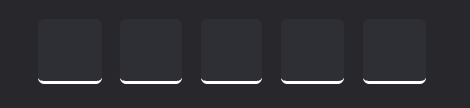
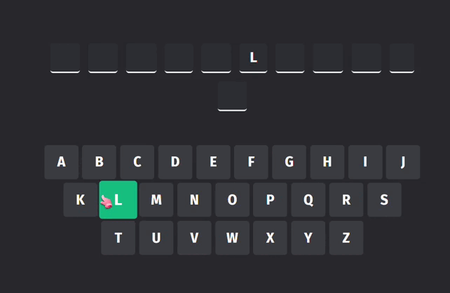

Escolha o modo de jogo
Escolha a palavra e a dica para o jogo
Como jogar a Forca?
Aprenda as regras, conheça os modos de jogo e descubra como adivinhar a palavra certa antes que o boneco caia!
O objetivo do jogo
O jogo da forca desenvolvido neste projeto segue a mesma lógica tradicional, mas com uma proposta diferente no formato das dicas apresentadas ao jogador.
Em vez de utilizar temas genéricos (como “animal”, “país” ou “objeto”), o jogo apresenta dicas no formato de pequenos enunciados. Esses enunciados funcionam como pistas mais descritivas, que exigem interpretação e raciocínio, e não apenas associação direta a um tema.
O principal objetivo dessa abordagem é transformar o jogo em uma experiência mais educativa e estimulante. Ao interagir com diferentes tipos de enunciados, o jogador é incentivado a:
- 🧠 relembrar conhecimentos que já possui;
- 📚 aprender novas informações de forma leve;
- 🔍 estimular a curiosidade ao tentar descobrir a resposta.
Dessa forma, o jogo deixa de ser apenas uma atividade de entretenimento e passa a atuar também como uma ferramenta de aprendizado intuitivo, explorando diferentes áreas do conhecimento de maneira dinâmica.
Palavra oculta
Os quadrados que representam a palavra oculta são organizados de forma alinhada e uniforme, criando uma leitura clara da quantidade de letras da resposta. Cada espaço funciona como um “placeholder”, indicando ao jogador quantas letras ainda precisam ser descobertas.
Quando uma letra é acertada, ela aparece dentro do quadrado correspondente, destacando-se em contraste com os demais espaços vazios. Já os quadrados não preenchidos mantêm um visual discreto, reforçando o mistério da palavra.

Teclado do jogo e sua interação com a palavra oculta
Logo abaixo, o jogador visualiza o teclado com todas as letras do alfabeto, permitindo selecionar suas tentativas de forma simples e intuitiva. A letra escolhida ganha destaque, indicando a interação do usuário durante a rodada.

- ■ Letra não selecionada
- ■ Acerto
- ■ Erro
As vidas do jogador durante a partida
O jogo conta com um sistema de 7 vidas (❤️❤️❤️❤️❤️❤️❤️) que representa, de forma visual, o progresso — ou o erro — do jogador durante a partida.
A cada tentativa incorreta, uma nova parte do corpo do boneco é desenhada na tela, tornando clara a consequência de cada erro. Esse processo acontece de forma gradual, criando uma tensão natural a cada jogada.
Conforme as vidas vão se esgotando, o boneco vai sendo completado até atingir seu estado final: ao perder todas as tentativas, ele “morre” e se transforma em um fantasma, marcando o fim da rodada de maneira visual e simbólica.
Esse recurso não só mantém a essência clássica do jogo da forca, como também reforça o senso de urgência e engajamento do jogador a cada escolha.
Usando a dica ou tema
Durante o jogo há um botão de lâmpada (💡) que revela o tema ou uma dica relacionada à palavra. Use com sabedoria — ela pode ser o empurrão que faltava para descobrir a resposta!
Acentos e caracteres especiais
O jogo aceita letras com acento automaticamente. Por exemplo: ao pressionar
A, o sistema reconhece tanto A quanto
Á,
Â, Ã,
À. Você nunca precisa se preocupar com acentuação!
Palavras compostas
Palavras com hífen ou espaço são exibidas com um traço visível entre as partes. Esse traço não conta como letra — apenas indica que a palavra tem mais de um elemento.
Um jogador
Escolha uma categoria — história, geografia, matemática, filosofia, TI, cibersegurança ou cultura pop — e o jogo sorteia automaticamente uma palavra do banco para você adivinhar.
Multijogador
Um jogador digita a palavra e a dica em segredo (os campos ficam ocultos). Depois passa o dispositivo para o outro jogador tentar adivinhar. Diversão garantida com amigos!
Clique em "Iniciar"
Na tela inicial, pressione Iniciar para entrar no menu de modos de jogo.
Escolha o modo
Selecione Um jogador (sorteia uma palavra) ou Multijogador (um jogador digita a palavra para o outro adivinhar).
Escolha a categoria (modo solo)
No modo solo, escolha um dos 9 temas disponíveis. O modo
Aleatório sorteia entre todas as categorias.
Adivinhe a palavra
Clique nas letras do teclado para tentar adivinhar. Letras certas aparecem reveladas em verde; letras erradas ficam marcadas em vermelho.
Use a dica com inteligência
Se estiver travado, toque no ícone 💡 para revelar o tema ou uma dica sobre a palavra.
Ganhe ou perca — jogue de novo!
Adivinhe todas as letras para vencer. Se errar 7 vezes, o boneco cai e o jogo termina. Clique em Jogar novamente para uma nova rodada!
O jogo tem trilha sonora e efeitos de som! Use o botão de volume no canto superior direito para ativar a música de fundo e tornar a experiência ainda mais imersiva. Os sons mudam conforme você acerta, erra ou termina a partida.
Pronto para jogar?
Você já sabe tudo que precisa. Agora é hora de testar seus conhecimentos!
Escolha uma categoria para o seu jogo
Realmente deseja sair para tela inicial?